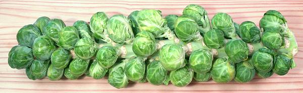

Brussels Sprouts

[B. oleracea Group Gemmifera]
This cabbage grows a large fibrous central stem with large collard-like
leaves radiating from it. When those leaves become old they yellow and
fall off, and are replaced not by new leaves but by small cabbage heads
radiating out from the main stem just above the leaf scar. Cabbages of this
type may have been known in Roman times, but they first became a major crop
in Belgium around 1590.
These cabbages have long been voted "most hated vegetable" in England,
but even there they are becoming more popular as the English slowly learn
to cook. The photo specimen stem was 20 inches long and weighed 3 pounds
11 ounces. Individual heads were up to 1-3/4 inches diameter.
More on Cabbage Greens.
Buying:
Brussels Sprouts are sold in most markets and
supermarkets, usually as loose heads. Here in California, where most of
them are grown, farmer's and produce markets also often sell them by the
stem when they are in peak season (late Winter through Spring). Look at
the base end, the head should be fairly tight and hard, not stemmy, and
there should be a minimum of yellowed leaves, though there will usually
be some.
Prep:
Brussels Sprouts are usually not a grit problem,
but wash them well by submerging them in cold water because there's often
a bug or two among the stems at the base end. Remove loose or yellowed
outer leaves and trim the stem close to the remaining leaves. For some
recipes you may cut them in half or quarters lengthwise, never crosswise.
For whole sprouts, some cooks cut a cross in the bottom of the stem so it will
cook faster with less risk of overcooking the leaves.
Cooking:
Never, Never cook Brussels
Sprouts "English Style" (boiled to death). Preferably steam them, but
you can also simmer them - just until barely tender - never
more (quoth the raven). This is more controllable if they are
cut in half or quarters lengthwise (depending on size) before cooking,
and they cook faster.
They are also often split in half or quarters, lightly oiled and
roasted until just tender. The grower of the stem shown in the top
photo provided instructions for charcoal grilling the whole stem.
cb_bsprouz 100215 - www.clovegarden.com
©Andrew Grygus - agryg@clovegarden.com - All photos on this
page not otherwise attributed are © cg1.
Linking to and non-commercial use of this page permitted.